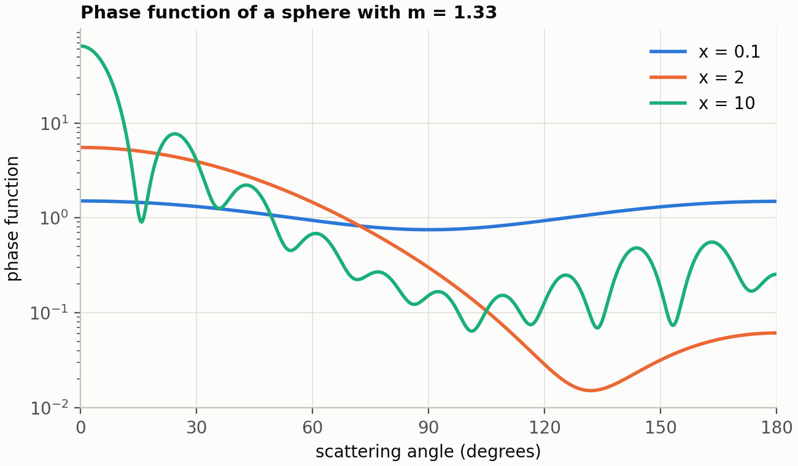
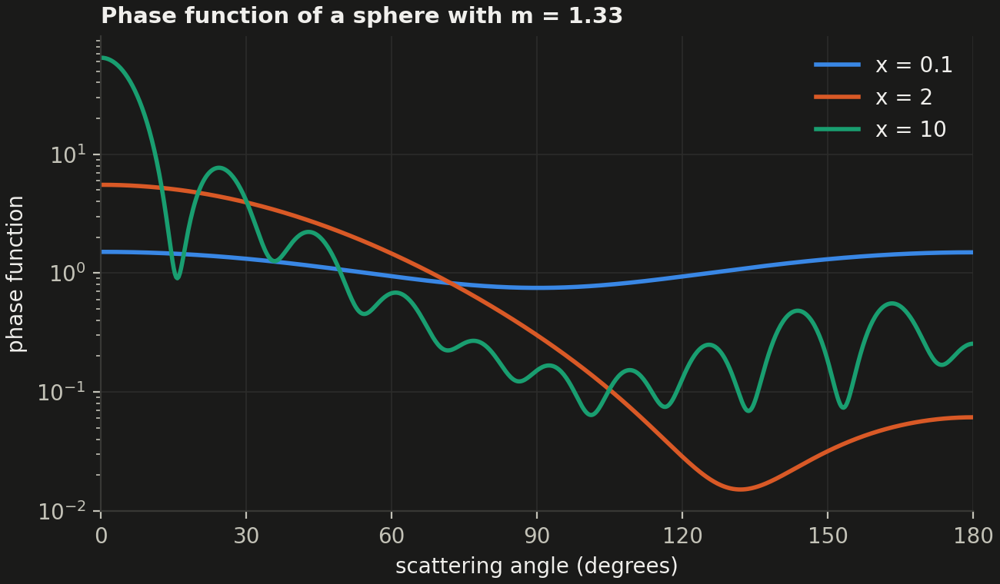
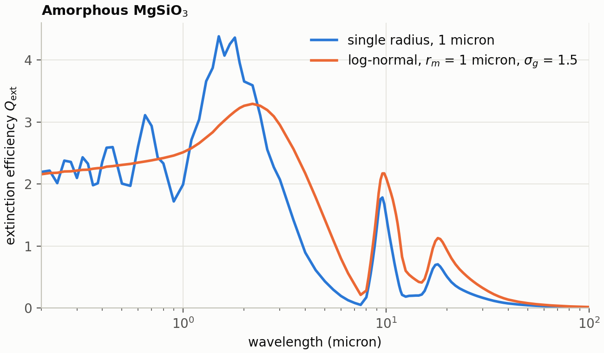
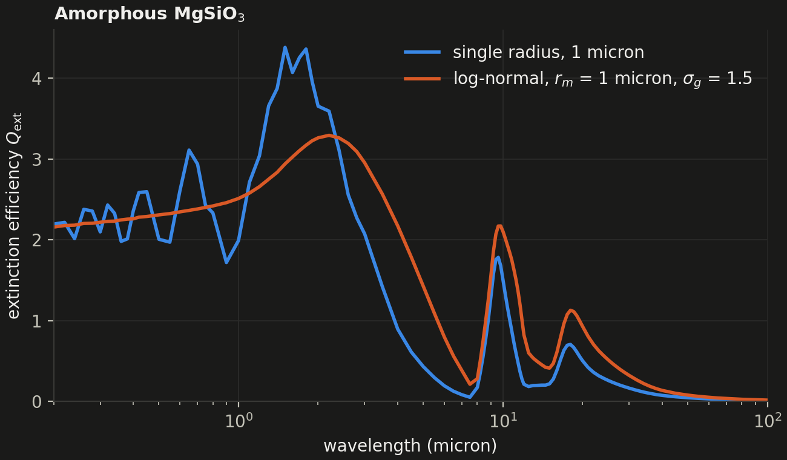

Examples¶
Example scripts¶
The examples/ directory of the repository contains four scripts that
demonstrate common workflows. They read the refractive indices from the
compilation/ directory and therefore have to be run from the root
directory of the repository:
python examples/example_efficiencies.py
python examples/example_legendre.py
python examples/example_phase_function.py
python examples/example_size_distribution.py
Script |
Content |
|---|---|
|
Reads |
|
Legendre series coefficients of the phase function, for a single wavelength and as a batch calculation. |
|
Phase function at 37 angles between 0° and 180°. Demonstrates the
conversion from degrees to cosines and the normalisation of the
scattering amplitudes with |
|
Cross sections integrated over a log-normal size distribution for all
wavelengths of |
The following sections contain additional, self-contained recipes.
Reading a refractive index file¶
The files of the compilation have
three header lines starting with # and three data columns. They can be
read with a few lines of Python,
def read_refractive_index(path):
wavelengths, n_real, n_imag = [], [], []
with open(path) as f:
for line in f:
line = line.strip()
if not line or line.startswith("#"):
continue
wl, n, k = line.split()[:3]
wavelengths.append(float(wl))
n_real.append(float(n))
n_imag.append(float(k))
return wavelengths, n_real, n_imag
or with NumPy:
import numpy as np
wavelengths, n_real, n_imag = np.loadtxt("compilation/Cr.dat", unpack=True)
Efficiencies as a function of the size parameter¶
import numpy as np
import matplotlib.pyplot as plt
import lxmie
x = np.logspace(-1, 2, 3000)
results = lxmie.mie([1.5] * len(x), [0.01] * len(x), x)
plt.plot(x, [r.q_ext for r in results], label="extinction")
plt.plot(x, [r.q_sca for r in results], label="scattering")
plt.plot(x, [r.q_abs for r in results], label="absorption")
plt.xscale("log")
plt.xlabel("size parameter")
plt.ylabel("efficiency")
plt.legend()
plt.show()
Cross sections and opacities¶
The efficiencies are converted to cross sections with the geometric cross section of the particle. With the mass of a particle, this yields the opacity per unit mass of the condensate:
import math
import lxmie
wavelengths, n_real, n_imag = read_refractive_index("compilation/MgSiO3_amorph_glass.dat")
radius = 0.1e-4 # particle radius in cm (0.1 micron)
density = 3.2 # density of the particle material in g cm^-3 (example value)
x = [2.0 * math.pi * radius / (wl * 1e-4) for wl in wavelengths]
results = lxmie.mie(n_real, n_imag, x)
area = math.pi * radius**2 # cm^2
mass = 4.0 / 3.0 * math.pi * radius**3 * density # g
c_ext = [r.q_ext * area for r in results] # cm^2 per particle
kappa_ext = [c / mass for c in c_ext] # cm^2 per g of condensate
Phase function¶
import numpy as np
import matplotlib.pyplot as plt
import lxmie
angles = np.linspace(0.0, 180.0, 721)
cos_angles = np.cos(np.radians(angles))
for x in [0.1, 2.0, 10.0]:
result, s1, s2 = lxmie.mie_amplitudes(1.33, 0.0, x, cos_angles)
p = lxmie.phase_function(s1, s2, x, result.q_sca)
plt.plot(angles, p, label=f"x = {x}")
plt.yscale("log")
plt.xlabel("scattering angle (degrees)")
plt.ylabel("phase function")
plt.legend()
plt.show()


Result of the example above. For small size parameters, the phase function approaches the one of Rayleigh scattering. With increasing size parameter, a strong forward-scattering peak develops.¶


Result of the example above. For small size parameters, the phase function approaches the one of Rayleigh scattering. With increasing size parameter, a strong forward-scattering peak develops.¶
Degree of linear polarisation¶
The scattering amplitudes contain the full information on the scattered light. As an example, the degree of linear polarisation for unpolarised incident light is given by \(P = (|S_1|^2 - |S_2|^2) / (|S_1|^2 + |S_2|^2)\):
result, s1, s2 = lxmie.mie_amplitudes(1.33, 0.0, 10.0, cos_angles)
i1 = np.abs(np.array(s1))**2
i2 = np.abs(np.array(s2))**2
polarisation = (i1 - i2) / (i1 + i2)
Reconstructing the phase function from its Legendre series¶
import numpy as np
from numpy.polynomial import legendre
import lxmie
x = 5.0
nb_moments = 60
result, moments = lxmie.mie_legendre(1.5, 0.01, x, nb_moments)
# p(mu) = sum_l (2l + 1) chi_l P_l(mu)
mu = np.linspace(-1.0, 1.0, 201)
coefficients = (2.0 * np.arange(nb_moments) + 1.0) * np.array(moments)
p_series = legendre.legval(mu, coefficients)
# comparison with the directly calculated phase function
result, s1, s2 = lxmie.mie_amplitudes(1.5, 0.01, x, mu)
p_direct = np.array(lxmie.phase_function(s1, s2, x, result.q_sca))
print(np.max(np.abs(p_series - p_direct))) # about 1e-14
Size distributions¶
import lxmie
wavelengths, n_real, n_imag = read_refractive_index("compilation/MgSiO3_amorph_glass.dat")
# radii in micron, as the wavelengths
distribution = lxmie.lognormal_distribution(1.0, 1.5)
results = lxmie.mie_distribution(n_real, n_imag, wavelengths, distribution)
print("effective radius:", results[0].effective_radius, "micron")
for wl, r in zip(wavelengths, results):
print(wl, r.c_ext, r.q_ext, r.asymmetry_parameter)


Extinction efficiency of amorphous MgSiO3 particles with a single radius compared to the effective extinction efficiency of a log-normal size distribution. The integration over the particle sizes removes the interference structure of the single-size result.¶


Extinction efficiency of amorphous MgSiO3 particles with a single radius compared to the effective extinction efficiency of a log-normal size distribution. The integration over the particle sizes removes the interference structure of the single-size result.¶
Size bins of a cloud model¶
Cloud and haze models often provide the number density of particles in a set of discrete size bins. These can be used directly as a size distribution. The mean cross sections multiplied by the total number density then yield the extinction, scattering, and absorption coefficients:
import lxmie
bin_radii = [0.01, 0.03, 0.1, 0.3, 1.0, 3.0] # micron
number_densities = [2.0e3, 9.0e2, 2.5e2, 4.0e1, 3.0, 0.1] # cm^-3
distribution = lxmie.SizeDistribution(bin_radii, number_densities)
result = lxmie.mie_distribution(1.5, 0.01, 0.55, distribution)
total_number_density = sum(number_densities) # cm^-3
# mean cross section in micron^2, converted to cm^2
extinction_coefficient = result.c_ext * 1e-8 * total_number_density # cm^-1
single_scattering_albedo = result.c_sca / result.c_ext